Встановлення пакетів та бібліотек у веб-застосунок
Зображення
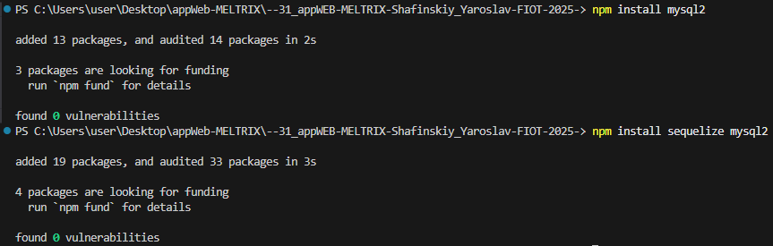
Підключення бази данних за допомогою пакету mysql2 та бібліотеки Sequelize у веб-застосунок
config\db.js
Зображення
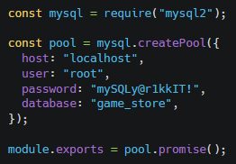
config\sequelize.js
Зображення
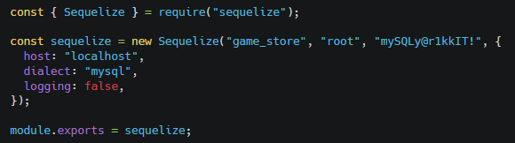
За допомогою SQL запитів з Node.js (SELECT, INSERT, UPDATE, DELETE) ми подивились запис таблиць, додали запис, оновили запис та видалили запис за певними умовами
Архітектура обробки запитів Client (Postman) ↓ Routes ↓ Controller (async функції) ↓ MySQL
Зображення
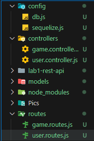
Routes і Controllers та скрипт запуску серверу
controllers\user.controller.js
Зображення
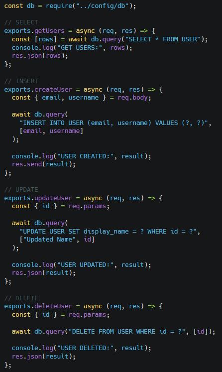
controllers\game.controller.js
Зображення
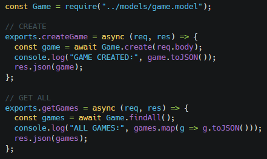
routes\user.routes.js
Зображення
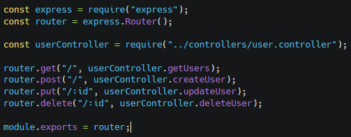
routes\game.routes.js
Зображення
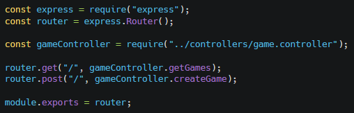
Скрипт запучку сервера
Зображення
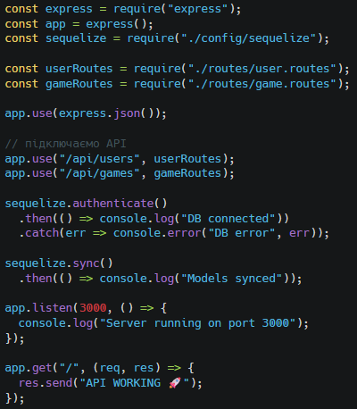
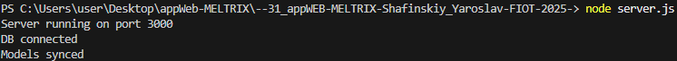
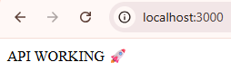
Запит SQL SELECT, Postman GET + вивід у консолі
Зображення
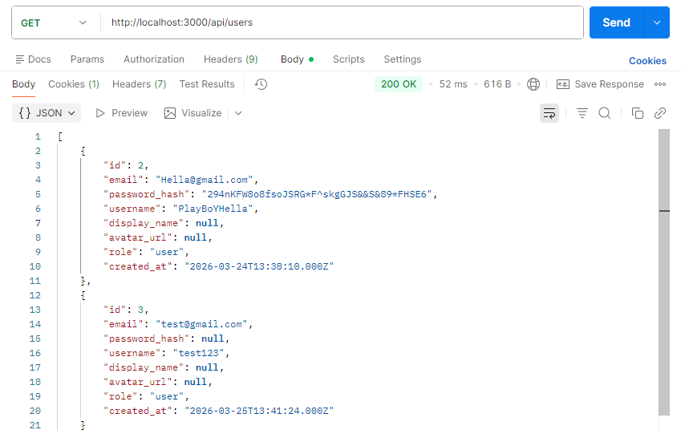

Запит SQL INSERT, Postman POST + вивід у консолі та перегляд у mySQL
Зображення

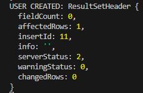

Запит SQL UPDATE, Postman PUT + вивід у консолі
Зображення


Запит SQL DELETE, Postman DELETE + вивід у консолі
Зображення
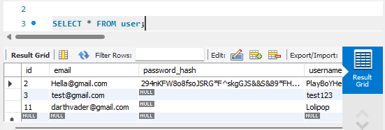
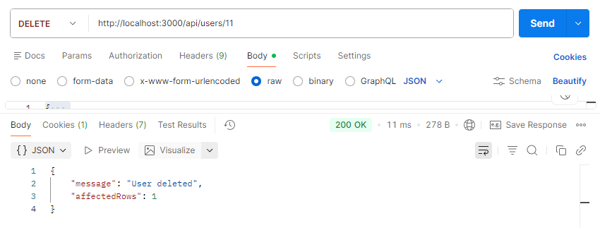